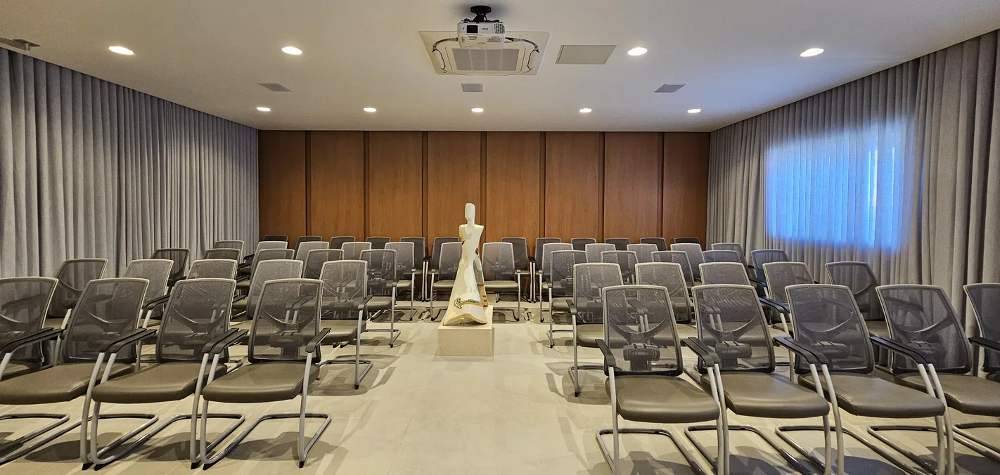
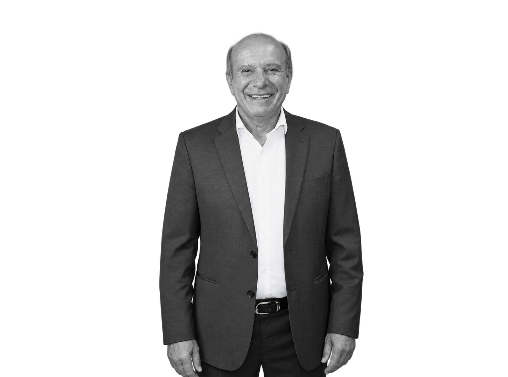

01 / O auditório
Um palco para o conhecimento.
Um espaço de aprendizado, diálogo e formação. Um nome que celebra o amor pela profissão e a crença no poder transformador do saber.
Uma homenagem eternizada no nome deste auditório.

Arraste para olhar em volta
Há históriasque merecemum palco.
Auditório Dr. Wolfgang Jorge Coelho
Um espaço de conhecimento.
Uma homenagem a quem fez do saber
um legado.

02 / O legado
O valor de uma vida está no que ela inspira.
 Um exemplo que começa em família.
Um exemplo que começa em família.
Professor, advogado, defensor público, tabelião e registrador de imóveis. Em cada papel, Dr. Wolfgang Jorge Coelho construiu uma trajetória marcada pela dedicação ao estudo, à justiça e ao serviço público.
Como pai, ensinou e incentivou pelo exemplo. Sua determinação inspirou a família a seguir os caminhos do conhecimento, da ética e da conquista por mérito e vocação.
A história por inteiro
Vereador, contador, profissional do Direito, professor, advogado, defensor público, escrivão, tabelião de notas e registrador de imóveis: sua história reúne diferentes formas de servir à sociedade.
Com seu exemplo, garra e determinação, incentivou mãe, irmãos, sobrinhos, esposa e filhos a trilhar o caminho do estudo e das carreiras notariais e registrais.
Comunicativo e orador nato, é um entusiasta do conhecimento, estudioso do Direito e difusor de ideias que enobrecem a atividade notarial e registral. Sua atuação em entidades de classe contribuiu para o fortalecimento institucional e a valorização das serventias extrajudiciais.
Não há crise que resista a um trabalho sério, honesto e organizado.
Uma convicção que orienta sua trajetória.
Ensinar também é viver aquilo em que se acredita.
Dedicação, trabalho, honra e justiça: valores transmitidos à família nas ações e nas palavras de todos os dias.
O saber transforma. E se multiplica quando é compartilhado.
Estudioso incansável e orador nato, Dr. Wolfgang sempre encontrou no diálogo e no aprendizado uma maneira de inspirar outras pessoas.
03 / Memórias
A vida também se conta em encontros.
Laços, conquistas e momentos que dão sentido a uma trajetória.
Toque em uma fotografia para ver de perto.
Servir é perpetuar
a confiança pública.
Dr. Wolfgang Jorge Coelho
Uma trajetória que inspira.
Um legado que continua.